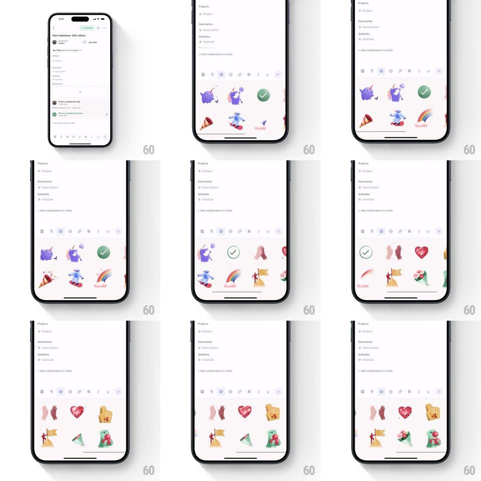

Media
Frame-by-frame

Rebuild this interaction 1:1: Asana's comment sticker picker - a bottom sheet of looping 3D animated illustrations (celebrating cats, party cones, clapping hands, gem hearts, rainbows) that page horizontally, each playing its idle loop live in the grid.

Rebuild this interaction 1:1: Asana's comment sticker picker - a bottom sheet of looping 3D animated illustrations (celebrating cats, party cones, clapping hands, gem hearts, rainbows) that page horizontally, each playing its idle loop live in the grid.
## Integration
Integration: stack-agnostic spec - springs given as stiffness/damping, timed motions as duration + curve; map every value to your framework and animation library of choice.
## Scene
A task detail ("Next milestone: 500 videos") with a comment composer; opening the picker raises a bottom sheet: a toolbar row (GIF, emoji, sticker tabs) and a paged grid (4 columns x 2 rows visible) of glossy 3D stickers on white.
## Motion spec
Pattern: live-looping sticker grid.
- The sheet rises with a spring (~320/24) over a 40% dim.
- Every sticker in the grid plays its own short 3D loop continuously (each ~1.5-2.5s, seamless): the check bounces, the party cone pops streamers, the hands clap, the heart gem twinkles - loops are phase-offset per cell so the grid shimmers instead of pulsing in unison.
- Horizontal paging snaps page-by-page (spring ~350/22); stickers entering from the edge are already mid-loop.
- Tapping a sticker: it scales down 0.9 and pops back (spring ~420/18) as it inserts into the composer.
## Calibration
- Loops never restart on scroll - playback is per-asset, continuous.
- Keep simultaneous animated cells under ~12; off-page cells pause.
## Reduced motion
Static first frames; animate only the tapped sticker.
## Don't miss
- The phase offsets are the difference between "alive" and "slot machine" - randomize start times on sheet open.
- Stickers sit on transparent white - no card chrome around them.